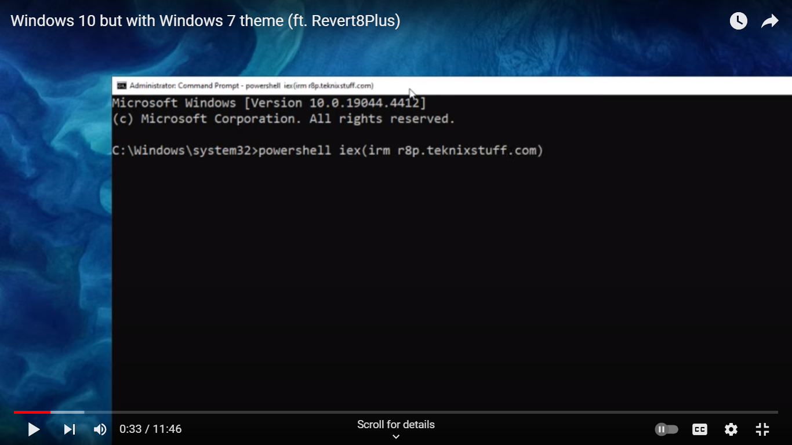
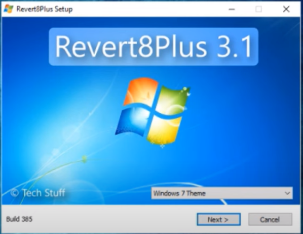
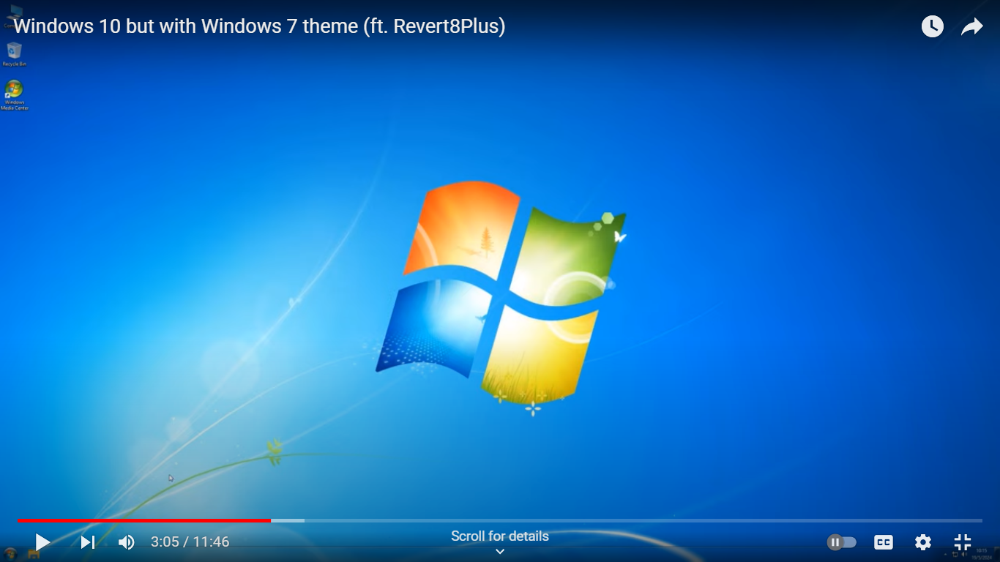

Extras
Try to download Camtasia Studio Old Versions

Here's how to transform windows 10 to windows 7 lets go.
Step 1. Go to windows Button and search cmd and run as administrator.
Step 2. Type and copy this name: powershell iex(irm r8p.teknixstuff.com)

Step 3. Enjoy :D

